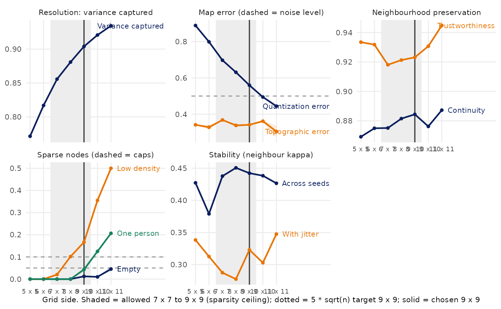

Trains self-organizing maps over a range of square grid sizes
and measures each map before any clustering model is fitted. No value of
k and no Mclust covariance model enters the screen, so the chosen map is
fixed before candidate cluster solutions are compared on it.
CreateClusterModel_SOM_MClust() runs this screen automatically when no
grid size is supplied.
For every side the screen reports:
resolution: variance captured and quantization error (mean distance from each person to their node);
map error: topographic error (share of people whose two closest nodes are not adjacent);
neighbourhood preservation: trustworthiness and continuity on a sample of people (Venna and Kaski, 2001);
sparse nodes: empty, one-person and low-density nodes;
stability: Cohen's kappa for "same or adjacent node" between pairs of maps, both across seeds and across seeds plus jitter (small normal noise added to every z-score; Hennig, 2007). Every participant is kept in every refit: subsamples overstate sparse nodes because the final map is trained on everyone.
The grid is then chosen by SelectSOMGrid().
Usage
ScreenSOMGrid(
data,
variables = NULL,
ZScoreType = c("Center and Scale", "Center Only", "Scale Only", "ZScoreObj",
"PreZScored"),
ZScoreObject = NULL,
ZScoreVars = NULL,
sides = NULL,
refits = NULL,
jitter_sd = 0.25,
seed_som = 934521L,
som_topo = "hexagonal",
som_neigh = "gaussian",
som_epochs = 100L,
min_nodes_per_variable = 10,
max_nodes_per_variable = 30,
max_nodes = NULL,
max_one_person_prop = 0.1,
max_empty_prop = 0.05,
low_density_n = 3L,
pair_sample = 20000L,
trust_sample = 1000L,
trust_k = 10L,
select = c("target", "largest_feasible"),
progress = FALSE,
cores = 1L
)Arguments
- data
A data frame.
- variables
Numeric clustering variables. Defaults to all numeric columns.
- ZScoreType, ZScoreObject, ZScoreVars
Preprocessing, as in
CreateClusterModel_SOM_MClust(), so the screen sees the same matrix as the pipeline.- sides
Optional integer vector of square grid sides to screen. By default the screen covers two sides below the smaller of the variable floor and the 5 * sqrt(n) target, up to two sides above the larger of the two, and never more than one side past the cap. Wide ranges are screened every other side, always keeping the floor, target and cap.
- refits
Map refits per side for each perturbation (seed, and seed plus jitter). Default
5, or3when there are more than 5,000 participants.- jitter_sd
Noise standard deviation in z-score units, one value or one per variable. It sets both the jitter used for stability and the noise ceiling. When test-retest reliability is known, use
sqrt(1 - reliability)per variable. Default0.25.- seed_som
SOM seed. The first seed refit of each side is exactly the map
CreateClusterModel_SOM_MClust()trains with the same seed.- som_topo, som_neigh, som_epochs
SOM topology, neighbourhood function and batch epochs, matching the pipeline defaults.
- min_nodes_per_variable, max_nodes_per_variable, max_nodes, max_one_person_prop, max_empty_prop, select
Selection settings passed to
SelectSOMGrid().- low_density_n
Nodes holding fewer than this many people are counted as low-density (reported, not used for selection). Default
3.- pair_sample
Number of person pairs sampled for neighbour kappa.
- trust_sample, trust_k
Sample size and neighbourhood size for trustworthiness and continuity.
- progress
Print one line per screened side.
- cores
Workers for per-side refits, using the clustering stability backend. Default 1. Seeds are fixed per fit; serial and parallel metrics match. refit_status records failures and table reports seed/jitter success rates. If all seed fits fail for a side, screening stops with the cause.
Value
A SOMGridScreen object with table (one row per side),
refit_status (Side, Refit, Type, Status, Error for seed and jitter fits),
table$SuccessRate_seed and table$SuccessRate_jitter (shares fitted),
refits (one row per seed refit), pairs (one row per pair of refits),
selection (chosen side, floor, ceilings, reason, warnings) and
settings. Use plot() for the screening figure and
SOMGridDecisionTable() for a formatted table.
References
Vesanto J, Himberg J, Alhoniemi E, Parhankangas J (2000). SOM Toolbox for Matlab 5. Helsinki University of Technology, Report A57.
Kiviluoto K (1996). Topology preservation in self-organizing maps. Proceedings of the IEEE International Conference on Neural Networks, 294-299.
Venna J, Kaski S (2001). Neighborhood preservation in nonlinear projection methods: an experimental study. ICANN 2001, 485-491.
Hennig C (2007). Cluster-wise assessment of cluster stability. Computational Statistics & Data Analysis 52, 258-271.
Examples
# \donttest{
set.seed(1)
df <- as.data.frame(matrix(rnorm(300 * 4), ncol = 4))
screen <- ScreenSOMGrid(df, names(df), refits = 2)
screen
#> SOM grid screen: n = 300, 4 variables, 2 refits per side (seed, and seed + jitter SD 0.25)
#> Allowed 7 x 7 to 9 x 9 (floor: 10 nodes per variable; ceiling: sparsity). Chosen: 9 x 9.
#> The 5 * sqrt(n) target (9 x 9) lies inside the allowed range 7 x 7 to 9 x 9.
#> See plot() and SOMGridDecisionTable(); change thresholds with SelectSOMGrid().
plot(screen)

SOMGridDecisionTable(screen)
#> Grid People per node Variance captured Quantization error
#> 1 5 x 5 12.0 0.772 0.89
#> 2 6 x 6 8.3 0.817 0.80
#> 3 7 x 7 6.1 0.856 0.70
#> 4 8 x 8 4.7 0.881 0.63
#> 5 9 x 9 3.7 0.904 0.56
#> 6 10 x 10 3.0 0.921 0.49
#> 7 11 x 11 2.5 0.934 0.44
#> Topographic error Trustworthiness Continuity Empty One-person Low-density
#> 1 0.34 0.933 0.869 0% 0% 0%
#> 2 0.33 0.932 0.875 0% 0% 0%
#> 3 0.37 0.918 0.875 0% 0% 2%
#> 4 0.34 0.921 0.882 0% 1% 10%
#> 5 0.34 0.923 0.884 1% 4% 17%
#> 6 0.36 0.931 0.876 2% 10% 36%
#> 7 0.30 0.945 0.887 4% 22% 50%
#> Kappa jitter Kappa seeds Floor Sparsity Above noise Under cap Chosen
#> 1 0.34 0.43 ✗ ✓ ✓ ✓
#> 2 0.31 0.38 ✗ ✓ ✓ ✓
#> 3 0.29 0.44 ✓ ✓ ✓ ✓
#> 4 0.28 0.45 ✓ ✓ ✓ ✓
#> 5 0.32 0.44 ✓ ✓ ✓ ✓ ◀
#> 6 0.30 0.44 ✓ ✗ ✗ ✓
#> 7 0.35 0.43 ✓ ✗ ✗ ✗
# Change a threshold without refitting any maps
SelectSOMGrid(screen, max_one_person_prop = 0.05)
#> SOM grid screen: n = 300, 4 variables, 2 refits per side (seed, and seed + jitter SD 0.25)
#> Allowed 7 x 7 to 9 x 9 (floor: 10 nodes per variable; ceiling: sparsity). Chosen: 9 x 9.
#> The 5 * sqrt(n) target (9 x 9) lies inside the allowed range 7 x 7 to 9 x 9.
#> See plot() and SOMGridDecisionTable(); change thresholds with SelectSOMGrid().
# }